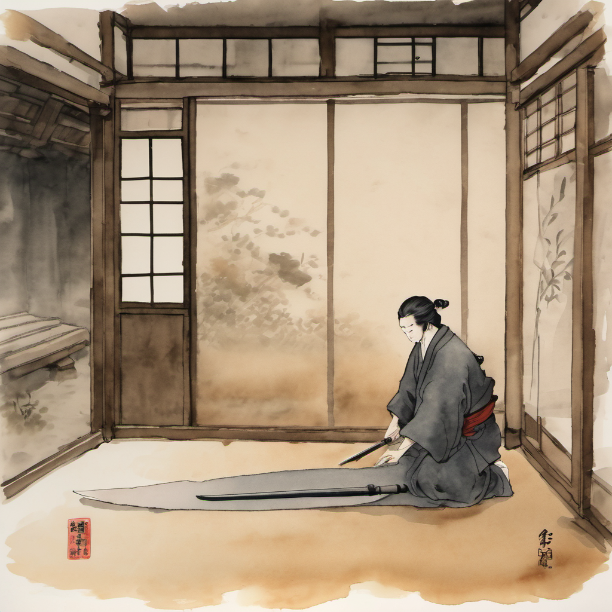
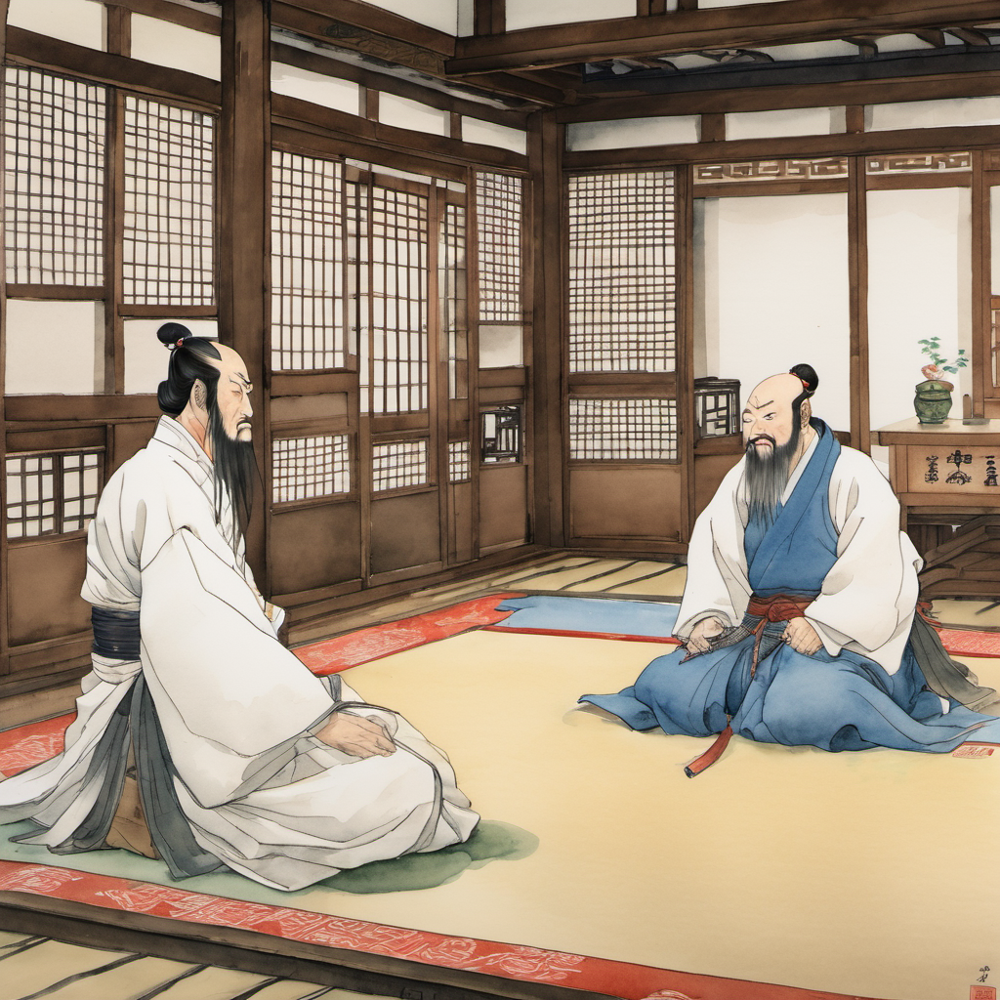
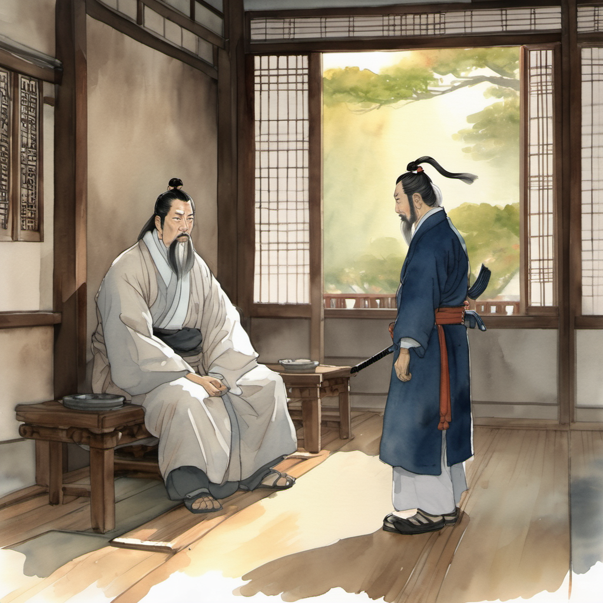
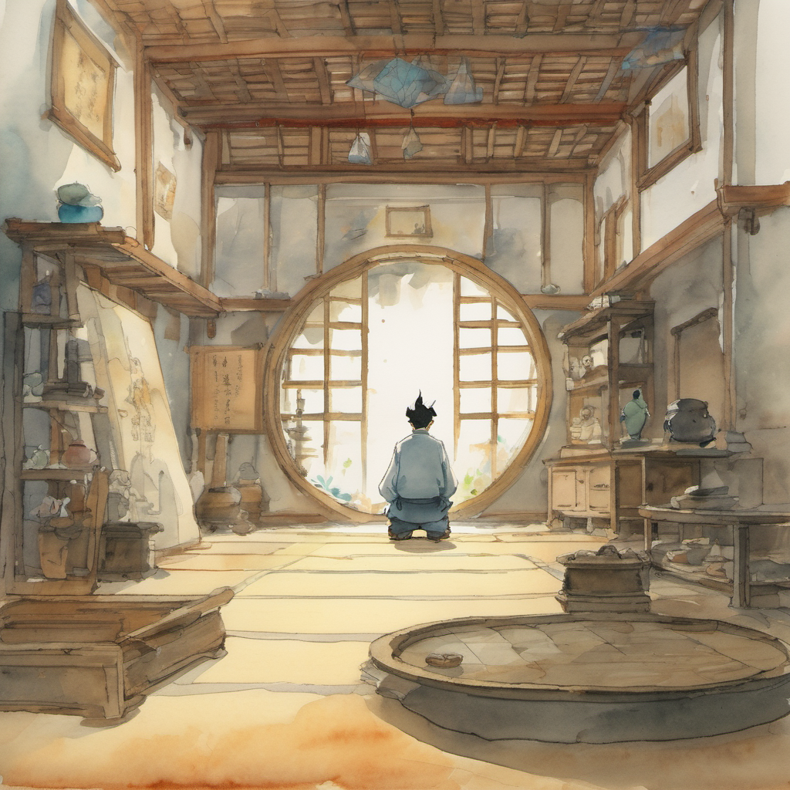
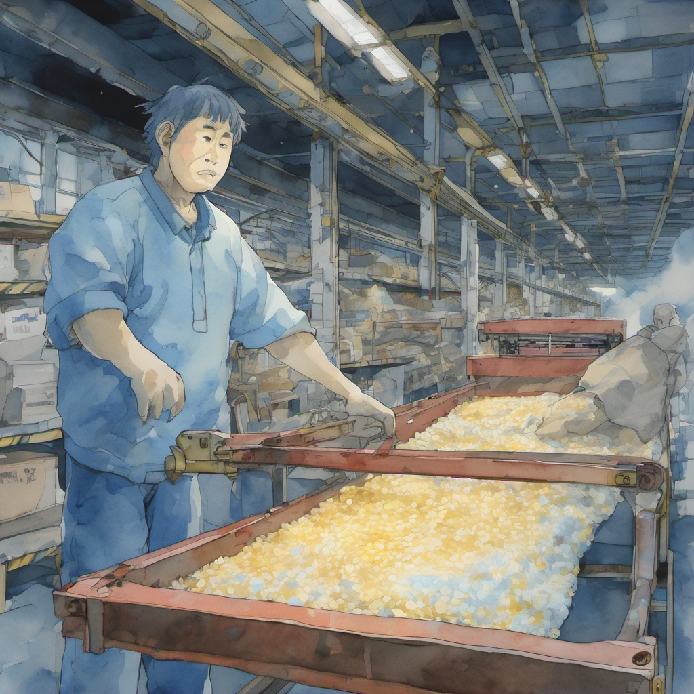
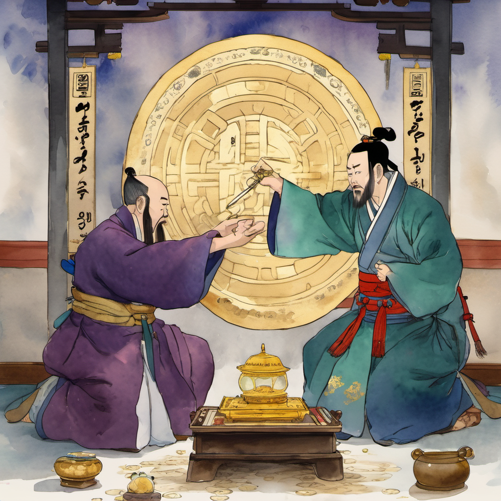
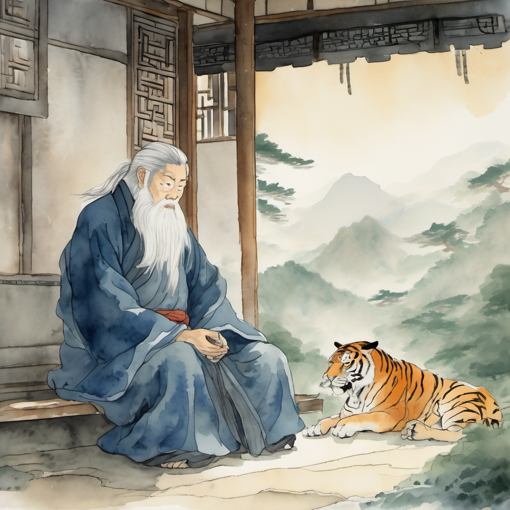
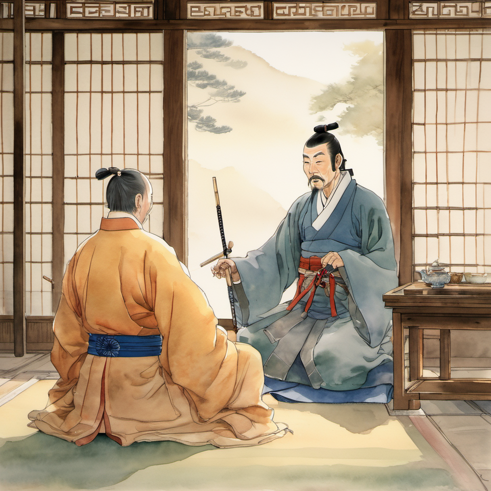

ACT 01
무명의 묵화 — 작두

생성 중...
막 1 — 작두 위에 한 명의 무당. 어머니이기도 하고 주공이기도 하오.
무당파 객점의 안쪽 — 본 본 별실. 한지 위에는 — 묵화(墨畫)가 — 한 장 — 그려져 있었다. 작두 위에 — 한 명의 — 무당이 — 서 있었다.
"...우리 어머니예요?" "...주공의 어머니이기도 하고 — 주공이기도 하오. 작두 위에 — 한 명의 — 무당이 — 서 있다는 것은 — 어머니의 — 봉인 — 과 — 주공의 — 봉인 — 이 — 한 줄에 — 이어져 있다는 — 의미요."
ACT 02
광명정 자리 배치

생성 중...
막 2 — 장무기가 어머니를 변호한 광명정 대회의 자리 배치.
김용 풍 의천도룡기의 — 광명정 대회의 — 자리 배치가 — 본 화의 — 별실 — 자리 — 배치 — 였다. 장무기가 — 명교의 — 본 사부 — 와 — 정파의 — 본 본 사부 — 사이에 — 앉아 — 자기 어머니를 — 변호하는 — 그 — 본맥의 — 변형판.
"...이방원도 — 데리고 오시오. 이방원이 — 주공의 — 변증을 — 들려야 하오."
ACT 03
그대는 주공을 무엇으로 부르오

생성 중...
막 3 — 의심 많은 호랑이의 표정이 인간의 표정으로 바뀌었다.
"...이방원. 그대는 — 주공을 — 무엇으로 — 부르오?" "...주공이라 — 부릅니다." "...왜 — 주공이라 — 부르오?"
이방원이 — 한 번 — 침묵했다. 의심 많은 호랑이의 — 표정이 — 한 번 — 인간의 — 표정으로 — 바뀌었다.
ACT 04
변증 첫 줄 — 노동의 박자

생성 중...
막 4 — 이 자의 박자는 — 균형이 — 아니라 — 노동입니다.
"...이 자는 — 도(道)를 — 따르지 — 않습니다. 이 자의 박자는 — 균형이 — 아닙니다. 이 자의 박자는 — 들쭉날쭉입니다. 무당파의 본 본 사부께서는 — 균형의 박자를 — 따르시지만 — 이 자는 — 균형의 박자를 — 따르지 — 않습니다. 이 자의 박자는 — 노동의 박자입니다."
ACT 05
13년 컨베이어의 박자

생성 중...
막 5 — 한진 41 컨베이어 벨트 위에서 — 13년 — 동안 — 무너지지 — 않은 — 박자.
"...노동의 박자는 — 한 박자가 — 들쭉날쭉이라서 — 박자가 — 무너지지 — 않습니다. 무너질 — 박자가 — 처음부터 — 없습니다. 균형의 박자는 — 한 번 — 무너지면 — 다시 — 잡기 어렵지만 — 노동의 박자는 — 들쭉날쭉으로 — 흔들리면서도 — 박자가 — 안 — 깨집니다. 한진 41 컨베이어 벨트 위에서 — 13년 — 동안 — 무너지지 — 않은 — 박자입니다. 균형의 박자가 13년을 — 무너지지 — 않을 수 있겠습니까?"
"...할 수 — 없을 — 것이오."
ACT 06
9,860원의 主 — 봉인의 主 ⭐

생성 중...
막 6 — 도(道)의 主가 — 아니라 — 노동의 — 主. 9,860원의 — 主. 봉인의 — 主.
"...그래서 — 이 자의 박자가 — 천하를 — 구할 수 있습니다. 이 자의 노동의 박자가 — 49년 — 한계의 — 봉인을 — 9,860원의 — 박자로 — 무한 봉인으로 — 확장합니다. 그래서 — 저는 — 이 자를 — 주공이라 — 부릅니다. 도(道)의 主가 — 아니라 — 노동의 — 主. 9,860원의 — 主. 봉인의 — 主."
ACT 07
무명의 의문 — 의심 많은 호랑이

생성 중...
막 7 — 의심이 — 깊으면 — 깊을수록 — 신뢰는 — 견고합니다.
"...그대는 — 의심 많은 호랑이로 — 알려져 있소. 위소보 + 강희제 + 영호충의 — 변형판이오. 그런 — 의심 많은 — 호랑이가 — 어찌 — 50대 노동자를 — 주공이라 — 부르고 — 변호하오?"
"...의심이 — 깊으면 — 깊을수록 — 신뢰는 — 견고합니다. 저는 — 사흘 동안 — 주공을 — 의심했습니다. 1권 7화 무력 시험 — 1권 9화 지략 시험 — 본 권의 — 작두 박자 시험. 세 번 — 의심했고 — 세 번 — 통과했습니다. 의심을 — 통과한 — 신뢰가 — 통과하지 않은 — 신뢰보다 — 깊습니다."
ACT 08
충심 시험 예고 — 39화 메가 달고나

생성 중...
막 8 — 본 권의 — 이방원의 — "주공" — 호칭은 — 본 권에서 처음으로 — 정식 호칭으로 — 자리 잡았다.
"...그대의 — 충심 — 시험이오. 본 권의 — 마지막 — 또는 — 다음 권 — 에 — 그대의 — 충심 시험이 — 있을 것이오."
"...본 권 — 마지막에 — 답하겠습니다. 이성계 — 봉인이 — 풀린 — 직후 — 저의 — 충심이 — 어디로 — 향할지 — 본 권 — 마지막 화에서 — 답이 — 나옵니다."
김용 풍 강호의 — 사부-제자 관계의 — 본맥에서 — 한 줄 — 위 — 의 — 단계. 1화에서 첫 시도. 본 화에서 — 정식 — 정착.
"...주공. 괜찮으셨습니까. 제 변증이 — 너무 — 깊었습니까?" "...깊었어. 근데 — 좋았다." "...감사합니다, 주공."
"...주공. 39화의 — 메가 달고나 폭렬진은 — 무당파도 — 지원하오. 청천이 — 동행하고 — 「태극검결」 비급도 — 빌려드린 채로 — 39화 까지 — 가지고 가시오. 39화 — 후 — 돌려주시면 — 되오." "...알았어요."
(2권 9화 끝)